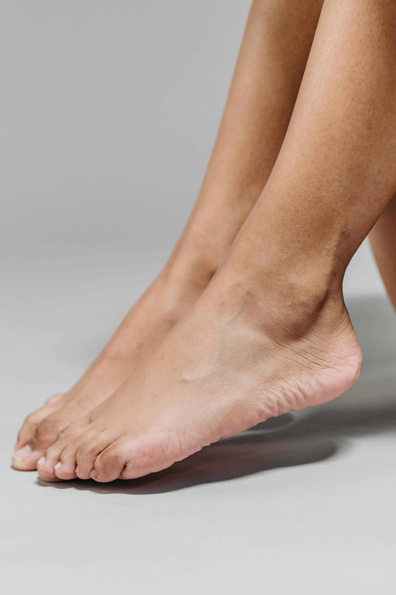
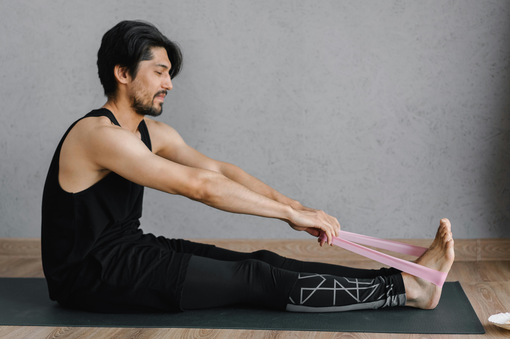
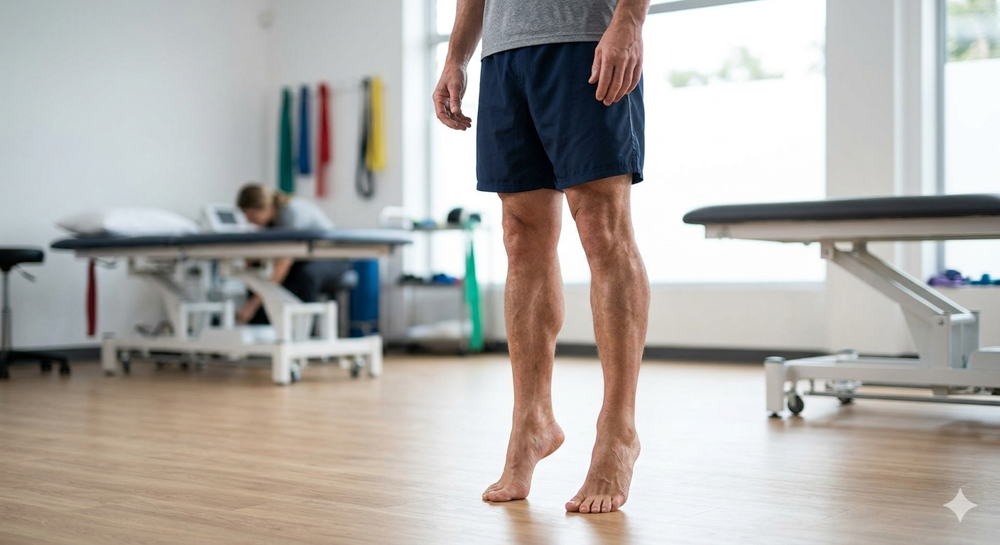

What Is Plantar Fasciitis?
Understanding the anatomy behind your heel pain explains why the right treatment works — and why rest alone usually doesn't.
The plantar fascia is a thick, strong band of connective tissue that runs along the sole of the foot — from your heel bone to the base of your toes. It acts like a bowstring, supporting the arch of your foot and absorbing the impact of every step you take. When this tissue is repeatedly overloaded or stressed beyond what it can handle, small tears develop and the surrounding tissue becomes inflamed. This is plantar fasciitis.
The signature symptom is sharp, stabbing pain at the bottom of the heel — most intense with the first steps after rest. This happens because the fascia tightens and slightly heals in a shortened position while you sleep or sit. The moment you put weight through it again, those micro-tears are reopened. After a few minutes of walking, the tissue warms up and the pain often eases — only to return after long periods of standing or at the end of the day.
The good news is that plantar fasciitis, despite being stubborn, responds very well to physiotherapy. The combination of hands-on treatment, targeted stretching, progressive loading exercises, and electrotherapy addresses both the immediate inflammation and the underlying tissue capacity — which is what prevents the problem from coming back year after year.
Quick Facts
Common Causes & Risk Factors
Plantar fasciitis develops when demand on the plantar fascia consistently exceeds its capacity to recover. These are the most common contributing factors.
Sudden Increase in Activity
Starting a new exercise programme, suddenly increasing running distance, or taking on a job requiring prolonged standing overloads the plantar fascia before it has adapted.
Excess Body Weight
Every kilogram of body weight multiplies through the foot during walking. Excess weight significantly increases the load on the plantar fascia with every step taken throughout the day.
Poor Footwear
Flat shoes with no arch support, worn-out trainers, or walking barefoot on hard floors all increase the mechanical load on the plantar fascia — particularly problematic on tiled or marble surfaces.
Tight Calf Muscles & Achilles Tendon
The calf muscles, Achilles tendon, and plantar fascia form one continuous mechanical chain. Tightness anywhere in this chain transfers excessive tension into the heel — this is the most common biomechanical driver of plantar fasciitis.
Flat Feet or High Arches
Both foot arch extremes alter how load distributes across the plantar fascia. Flat feet cause overpronation that strains the inner heel; high arches reduce natural shock absorption, increasing impact force.
Prolonged Standing on Hard Surfaces
Teachers, cooks, healthcare workers, and retail staff who spend hours on hard floors experience cumulative mechanical fatigue in the plantar fascia that can exceed the tissue's ability to repair overnight.
Symptoms of Plantar Fasciitis
Plantar fasciitis has a distinctive pattern of symptoms. Recognising it early leads to faster, easier recovery.
First-Step Morning Pain
The most classic sign — a sharp, stabbing pain in the heel or arch with the very first steps out of bed. Usually eases within 5–10 minutes as the tissue warms and loosens.
Pain After Rest
Pain that returns or worsens when you stand up after prolonged sitting — after a meal, a car journey, or an afternoon at a desk. A reliable indicator of plantar fascia involvement.
End-of-Day Aching
Dull, aching heel pain that builds through a day of standing or walking — distinct from the sharp morning pain, but equally disruptive to daily life.
Tenderness at the Heel
Sharp tenderness when pressing directly on the inner heel bone (calcaneus) — the attachment point of the plantar fascia. This specific tenderness is almost diagnostic of plantar fasciitis.
Pain with Exercise
Pain during or after running, jumping, or prolonged walking. Often starts mild and worsens progressively — athletes frequently try to train through it until it becomes debilitating.
Tightness Along the Arch
A feeling of tightness, tension, or pulling sensation along the bottom of the foot from heel to toes — most noticeable first thing in the morning or after the foot is pointed downward for a period.
How We Treat Plantar Fasciitis
Our approach targets both the immediate pain and the underlying tissue capacity — so it doesn't keep coming back every few months.
Our Goal
Walk without pain, stand all day without dreading the morning, and return to sport or exercise without restriction — permanently.
- Morning heel pain eliminated
- Full pain-free walking restored
- Return to exercise and sport
- Underlying cause corrected
- Recurrence risk significantly reduced
Full Assessment
We begin with a thorough assessment of the foot, ankle, calf, and lower limb mechanics. We identify your specific pain pattern, locate the exact point of maximum tenderness, assess your arch type, calf flexibility, and foot posture, and review your footwear and daily activity demands. Understanding the full picture is essential to treating the cause rather than just the symptom.
Pain Relief & Tissue Treatment
We use therapeutic ultrasound and electrotherapy to reduce local inflammation and promote healing in the damaged plantar fascia tissue. Manual therapy releases tight calf muscles and the Achilles tendon — addressing the tension that keeps the heel under constant stress. Taping techniques offload the plantar fascia between sessions, giving the tissue the chance to recover.
Stretching Programme
A specific stretching programme targeting the plantar fascia itself and the calf-Achilles chain is central to recovery. We teach you the correct technique — especially the plantar fascia stretch performed before that very first step out of bed — which dramatically reduces morning pain. Stretches should be held, not bounced, and performed consistently multiple times per day.
Progressive Loading
Once acute pain is controlled, we introduce a progressive loading programme using calf raises and intrinsic foot exercises. This is the step most people skip — and the reason their plantar fasciitis keeps returning. Loading the plantar fascia progressively stimulates tendon-like tissue remodelling, increasing the tissue's load capacity so it no longer tears under daily demand.
Footwear & Activity Guidance
We advise on appropriate footwear — the single most impactful daily change most patients can make. We discuss activity modifications during recovery, when and how to safely return to exercise, and a long-term home maintenance programme to ensure the problem does not return.
Treatment Techniques We Use
A combination of hands-on treatment and active rehabilitation consistently produces the best outcomes for plantar fasciitis.
Therapeutic Ultrasound
High-frequency sound waves applied directly to the heel stimulate tissue healing, reduce localised inflammation, and break down chronic scar tissue that accumulates in long-standing cases. Particularly effective in the early stages when pain is most intense and active loading is limited.
View ServiceManual Therapy & Calf Release
Deep soft tissue release of the gastrocnemius and soleus muscles, joint mobilisation of the ankle and subtalar joint, and specific plantar fascia release techniques. Restoring normal flexibility through the entire calf-Achilles-plantar fascia chain removes the mechanical tension that perpetuates heel pain.
View ServiceProgressive Loading Exercise
Eccentric and isometric calf raises, intrinsic foot strengthening, and progressive return-to-impact activities. Evidence consistently shows that loading — done correctly — is more effective than rest for plantar fasciitis. It rebuilds the tissue's capacity to handle the demands of daily life.
View ExercisesRecovery Timeline
Most patients feel significant improvement within 4–6 weeks. Full recovery depends on how long the condition has been present and how consistently the programme is followed.
Weeks 1–2
Pain significantly reduced. Inflammation controlled. Stretching routine established.
Weeks 3–4
Morning pain greatly reduced. Progressive loading begins. Calf and foot strength improving.
Weeks 5–8
Near pain-free walking. Return to exercise begins. Full daily activity tolerated.
3 Months
Full recovery. Maintenance programme in place. Sport and exercise fully resumed.
Home Exercises for Heel Pain Relief
These exercises should be performed daily — especially the ankle circles before your first step of the morning. They are simple but highly effective when done consistently.

Ankle Circles & Pumps
Do these while still lying in bed before your feet touch the floor. Gently pump the ankle up and down and circle the foot in both directions. This warms and loosens the plantar fascia gradually before it bears weight — dramatically reducing that first-step pain that makes mornings so dreaded.
Full Instructions
Seated Calf & Arch Stretch
Sit with legs outstretched. Loop a towel around the ball of the foot and gently pull the toes back towards you, keeping the knee straight. Hold the stretch firmly — you will feel it through the calf and along the arch. This directly stretches the plantar fascia and the calf-Achilles chain that drives most of the tension into the heel.
Full Instructions
Standing Calf Raises
Hold a wall or chair for balance. Rise slowly onto the balls of your feet, hold for 2 seconds at the top, then lower slowly over 3 seconds. This progressive loading of the calf and plantar fascia is the most important long-term exercise for plantar fasciitis — it rebuilds tissue capacity and prevents recurrence. Start bilateral, then progress to single-leg as strength allows.
Full InstructionsWhen Heel Pain Needs Urgent Attention
Most heel pain is plantar fasciitis — but certain signs indicate a more serious condition requiring imaging or specialist review before physiotherapy begins.
See a doctor or contact us urgently if you have any of these
These symptoms suggest a heel fracture, nerve entrapment, systemic disease, or other condition that needs assessment before physiotherapy treatment begins.
Stop Dreading Your First Step Every Morning
Plantar fasciitis is one of the most satisfying conditions to treat — because the improvement is usually fast and dramatic when the right approach is applied. Our physiotherapists in Luxor will assess your heel pain precisely, design a programme that fits your daily life, and guide you from that morning grimace to pain-free mornings within weeks. Evening appointments available every day except Sunday.